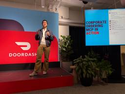

Digital Commerce 360
https://www.digitalcommerce360.com/
Digital Commerce 360 is a global leader in ecommerce research and media, with over 20 years of experience in reporting and analysis.
フィード
Kroger launches a rewards Mastercard
Digital Commerce 360
Grocery giant Kroger announced the launch of the Kroger Rewards World Elite Mastercard. The new co-branded credit card was built with the fintech company Imprint and Mastercard. The card is designed to offer shoppers points at a rate of 5X their purchases, according to Kroger. Those purchases can be made through Kroger.com and the Kroger […]The post Kroger launches a rewards Mastercard appeared first on Digital Commerce 360.
19時間前
Ikea, Kodiak prepare to launch driverless freight service in Texas
Digital Commerce 360
After four years of testing autonomous freight with a safety driver behind the wheel, Ikea is preparing to go fully driverless in Texas using Kodiak’s autonomous driving technology. Later this year, the Sweden-based home furnishings retailer plans to launch driverless service with Kodiak on a roughly 220-mile stretch connecting the Houston and Dallas metro areas. […]The post Ikea, Kodiak prepare to launch driverless freight service in Texas appeared first on Digital Commerce 360.
1日前
How Angara prepares for the Cyber 5, shifting consumer behavior
Digital Commerce 360
Online-only jewelry retailer Angara has been preparing for the Cyber 5 by increasing its focus on flexibility, according to co-founder and CEO Ankur Daga. That means giving its customers more choices and using data to respond faster to consumer behaviors. It also means “removing friction between inspiration and purchase,” Daga told Digital Commerce 360. The […]The post How Angara prepares for the Cyber 5, shifting consumer behavior appeared first on Digital Commerce 360.
2日前

DoorDash expands access to agentic ordering for offices, corporate customers
Digital Commerce 360
DoorDash put its latest artificial intelligence (AI), delivery and ordering options on display at its Dash Forward event in San Francisco on Tuesday, opening up agentic ordering to workplaces for new users. In addition to showing off new drones and its Dasher Returns services, the last-mile delivery platform and marketplace named its first corporate customers […]The post DoorDash expands access to agentic ordering for offices, corporate customers appeared first on Digital Commerce 360.
2日前
Commerce releases tools to optimize product catalogs for AI discovery
Digital Commerce 360
Commerce has released two artificial intelligence tools to help merchants make their product catalogs ready for AI discovery. It calls the tools Feedonomics Enrichment and BigCommerce Catalog Enrichment, noting that the capabilities serve both B2B and B2C merchants. Commerce described the tools as agentic commerce solutions, or its products and capabilities to help merchants prepare […]The post Commerce releases tools to optimize product catalogs for AI discovery appeared first on Digital Commerce 360.
3日前
Data signal revolution: The new digital commerce Scene
Digital Commerce 360
Sponsor content is created on behalf of and in collaboration with Bazoom by DigitalCommerce360. Our editorial staff is not involved in the creation of the sponsored content. This article examines how digital commerce platforms are responding to the growing demand for rapid interactions. It looks at how continuous updates about a web customer’s journey, real-time […]The post Data signal revolution: The new digital commerce Scene appeared first on Digital Commerce 360.
3日前
DoorDash prepares nationwide Returns service, welcomes new retailers to marketplace
Digital Commerce 360
DoorDash unveiled its new service for returns, along with other new app features and retail partners using its marketplace on Sept. 29 at its Dash Forward event in San Francisco. The last-mile delivery app, which recently added Costco deliveries in the U.S. and joined Lowe’s and Wing to pilot drone delivery, also showed off its […]The post DoorDash prepares nationwide Returns service, welcomes new retailers to marketplace appeared first on Digital Commerce 360.
3日前
Puma, Maersk expand distribution relationship in North America
Digital Commerce 360
A.P. Moller-Maersk has begun managing the North American distribution network for consumer brand manufacturer Puma. Puma and Maersk said their “partnership has expanded well beyond ocean shipping.” Maersk is now operating more than 2 million square feet of Puma’s distribution network, including automated warehouses in Arizona, California and Indiana. Helmut Leibbrandt, senior vice president of […]The post Puma, Maersk expand distribution relationship in North America appeared first on Digital Commerce 360.
4日前
Rexel agrees to acquire wire and cable distributor GCG in $1.4 billion deal
Digital Commerce 360
The electrical supplies and services distributor Rexel announced that it plans to acquire the specialty wire and cable distributor GCG in a deal that could bolster revenue for the new parent company. Rexel, which is headquartered in France, valued GCG at $1.4 billion in the transaction, according to a Rexel press release. The company has […]The post Rexel agrees to acquire wire and cable distributor GCG in $1.4 billion deal appeared first on Digital Commerce 360.
4日前
Adobe projection: 2026 online holiday sales to reach $275.1 billion
Digital Commerce 360
Adobe has released its forecast for the 2026 holiday shopping season, projecting that online sales in the last two months of the year will reach $275.1 billion. It said it based its forecast on more than 1 trillion visits to U.S. retail sites, 100 million SKUs and 18 product categories. The company refers to the […]The post Adobe projection: 2026 online holiday sales to reach $275.1 billion appeared first on Digital Commerce 360.
4日前